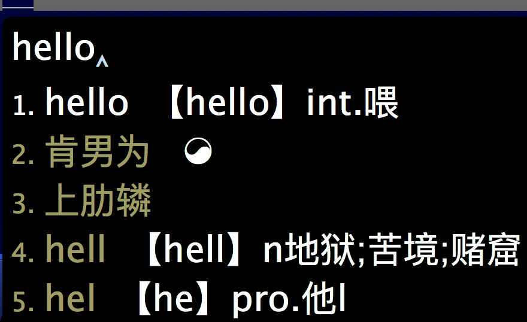

折腾rime
Title: 折腾rime手记
以前就听说过 鼠须管（小狼毫），以前安装过，可是感觉配置很复杂，然后就卸载了。最近又装了一次，看了一下说明，官网的也看了，贴吧的也看了，还是一头雾水，后来不死心，也是一颗折腾的心，想要研究明白。
最近一到两周，一直在进行学习配置，无非是网上搜索，学习别人的例子，根据已有的方案进行修改，一路摸着石头过河。
-
先是把自己常用的词加进了系统wubi的方案，结果没有词频了，后来用深蓝词库转换工具，有联网设置词频的方式，搞定了。现在想来，这个也不是太好。自己的常用词只有几百个，可以做一个自己词库方案。回到词库里。
-
折腾配色，改了一个自己喜欢的配色。灰色+白字。后来想试用系统的配色，直接改squirrel.custom.yaml,后来写了一个python脚本，更方便的修改配色。
-
后来要做一个拼音+五笔的方案，根据wubi_pinyin改了一个wubi_pinyinjjb的方案，弄好了反查，也弄好了用五笔打字-›汉字拼音，还有很有成就感的。
-
还学会了折腾滤镜，可以做到在输入法里输入单词显示简单的中文释义，更方便了。
